W
setembro de 2026
Há 25 faço parte dessa história. Com um certo medo kkkkk. Mas com a confiança dos melhores serviços e carinho pela minha família. Obg a todos que fazem o melhor consultório odontológico de Caruaru. …
Estética, implantes, ortodontia e cuidado para toda a família em uma clínica que conhece você pelo nome. Agende sua avaliação e receba um plano feito para a sua realidade.

Evita sorrir em fotos ou tapa a boca ao rir
Tem dentes faltando, desgastados ou desalinhados
Tem medo de dentista e vem adiando o tratamento
Está há muito tempo sem fazer check-up
Na MultiSorrisos você é ouvido com calma, recebe um diagnóstico claro e um plano de tratamento feito para a sua realidade — sem pressa e sem julgamentos.
Quero dar o primeiro passo

Fundada pela Dra. Noêmia há meio século e hoje conduzida ao lado da Dra. Willyanne, a MultiSorrisos une a experiência de quem viu gerações crescerem com a odontologia moderna.
“Cuidar de um sorriso é cuidar de uma vida inteira.” Dra. Willyanne · formada pela ASCES, expert em prevenção
Um corpo clínico completo para cuidar de cada fase da vida do seu sorriso.


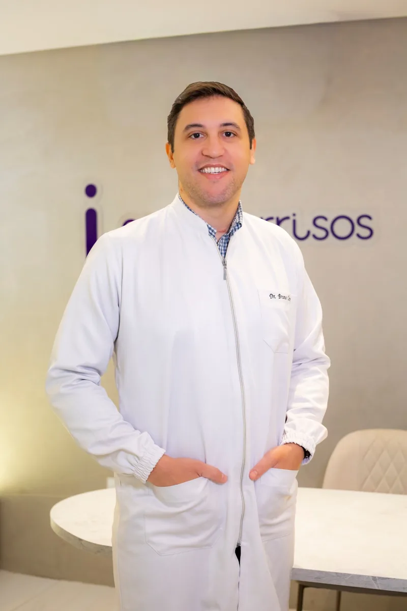
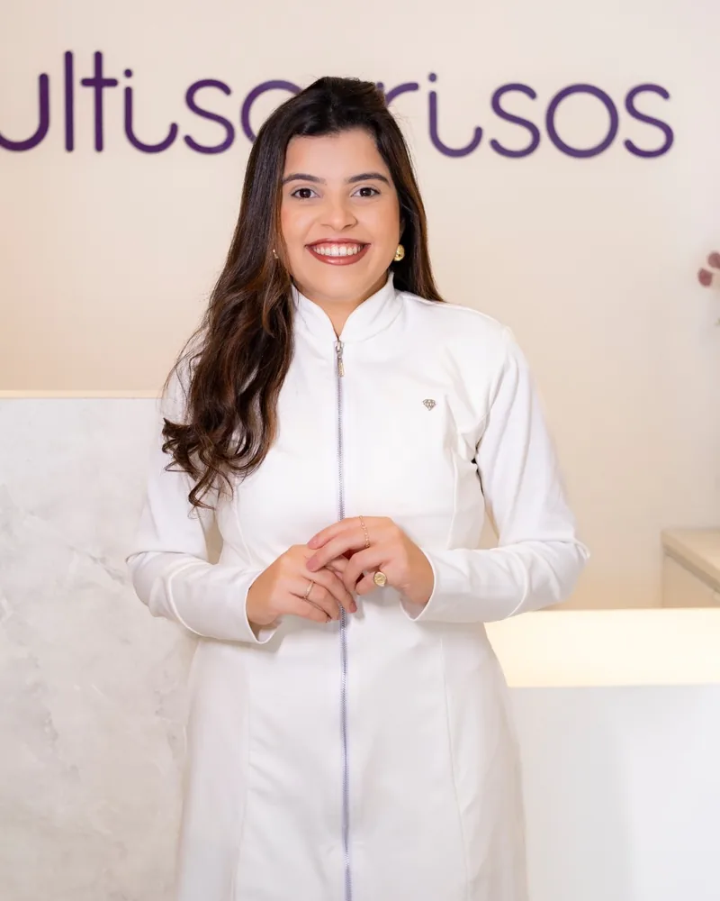
Toque na especialidade e fale com a nossa equipe.
Clareamento, facetas e lentes de contato dental para um sorriso bonito e natural.
Quero saber maisReposição de dentes perdidos com segurança, firmeza e aparência natural.
Quero saber maisDevolvemos função, conforto e estética para quem precisa reconstruir o sorriso.
Quero saber maisAparelhos e alinhadores para corrigir a posição dos dentes em qualquer idade.
Quero saber maisAtendimento lúdico e acolhedor para crianças crescerem sem medo de dentista.
Quero saber maisCheck-ups e limpezas regulares para evitar problemas antes que apareçam.
Quero saber maisArraste a barra para comparar.


Imagens publicadas com autorização. Resultados variam de acordo com cada caso.
Avaliações reais publicadas no Google.
Há 25 faço parte dessa história. Com um certo medo kkkkk. Mas com a confiança dos melhores serviços e carinho pela minha família. Obg a todos que fazem o melhor consultório odontológico de Caruaru. …
Meu sentimento com relação aos profissionais da Multisorrisos é gratidão. Não fiz apenas tratamento dentário, mas também um resgate da autoestima. A clínica possui um atendimento humanizado e muito eficiente. Indico de olhos fechados.
Tenho muitos traumas de infância em relação a dentista, sempre sofri, fico muito nervosa, passo mal, e com a Dra. Willyanne, eu me senti muito mais segura e a calma que ela passa pro paciência é surpreendente!
Famílias, gerações e histórias que passaram pela MultiSorrisos e hoje sorriem com confiança.
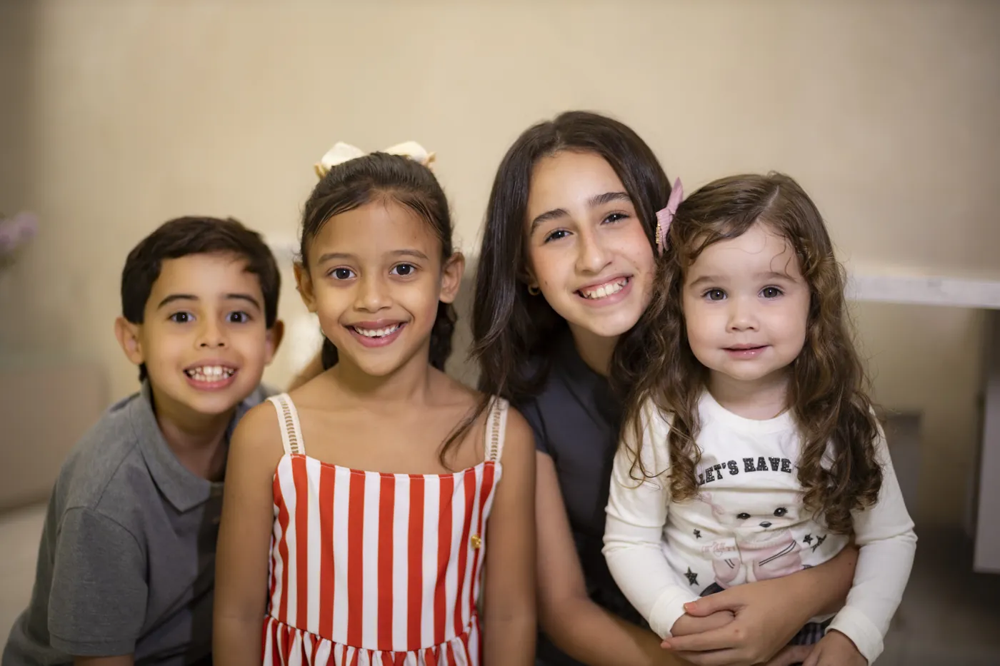
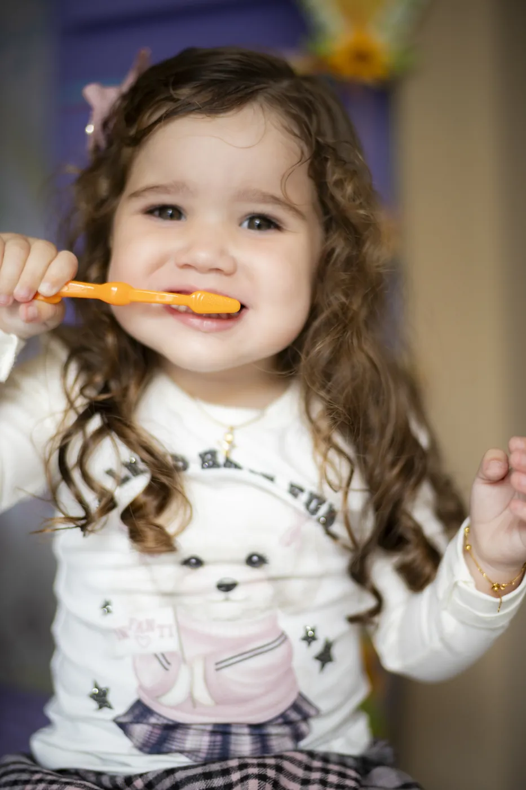
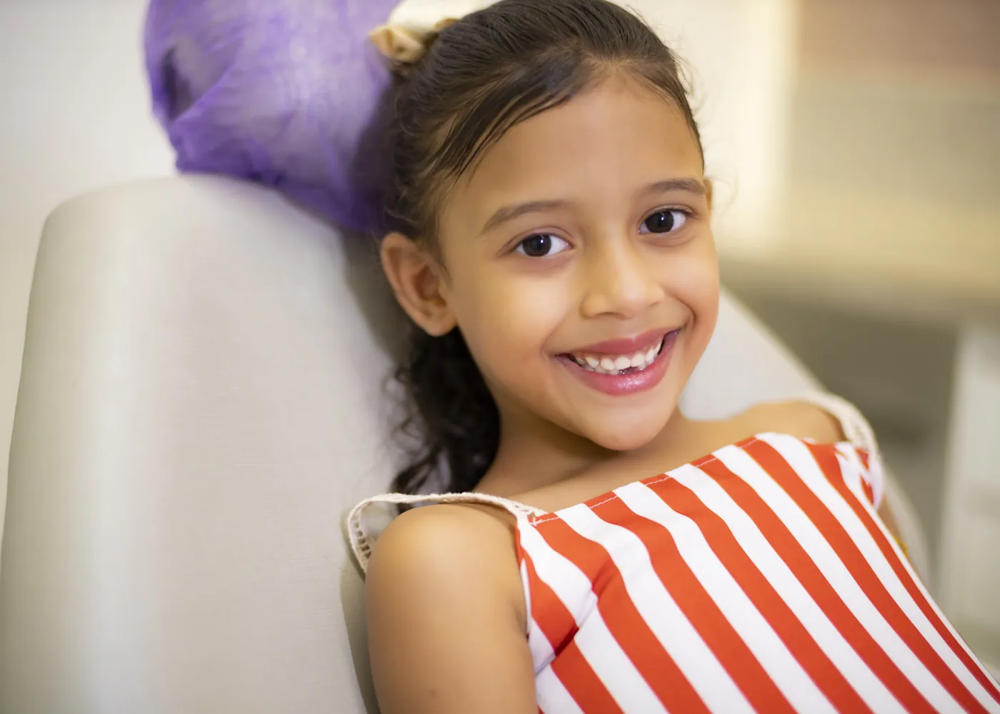
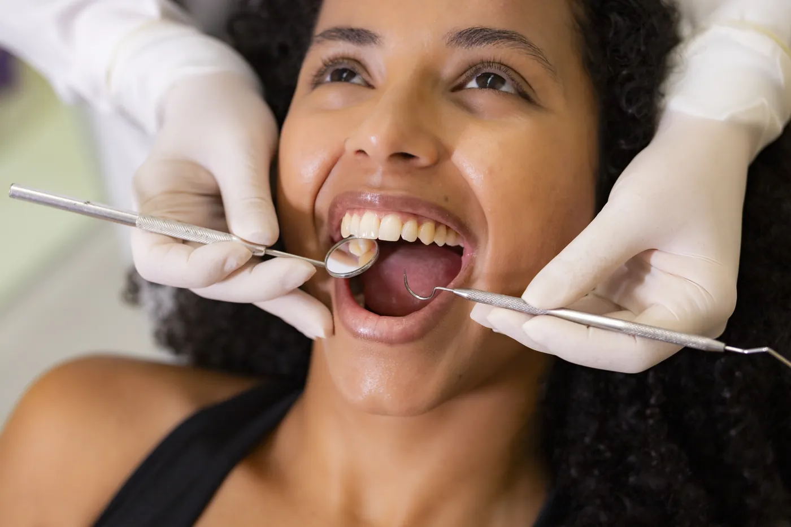
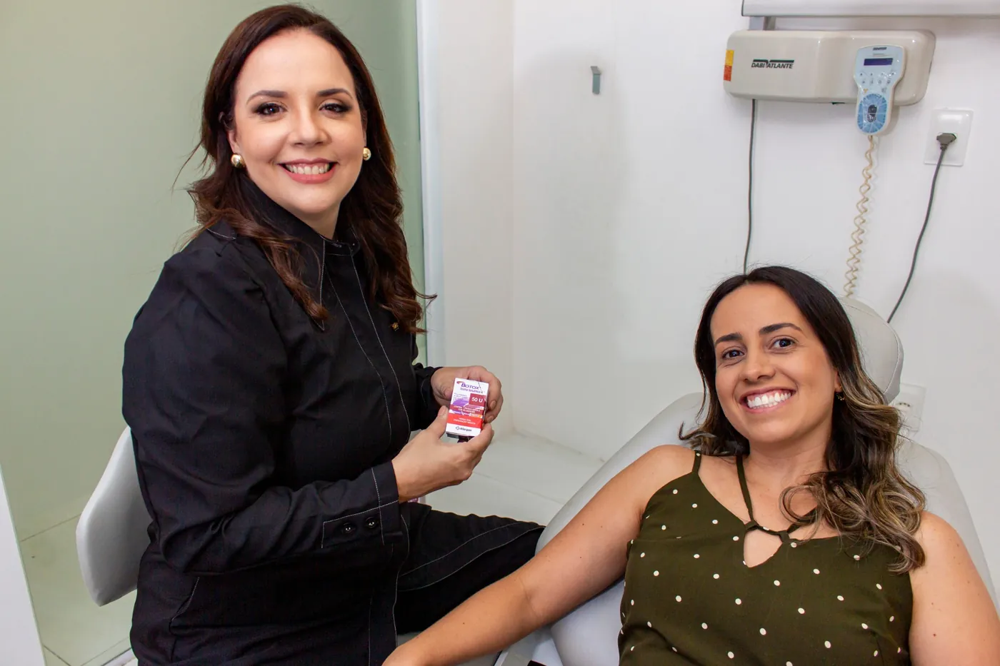
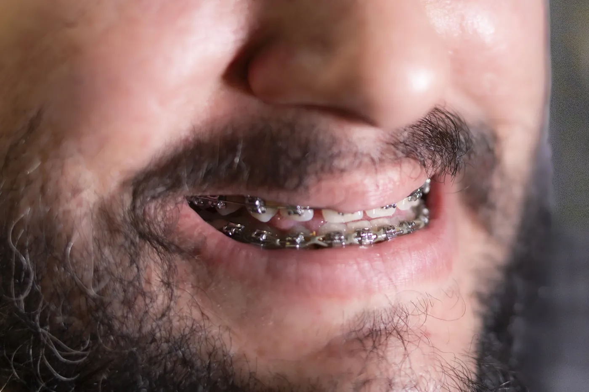
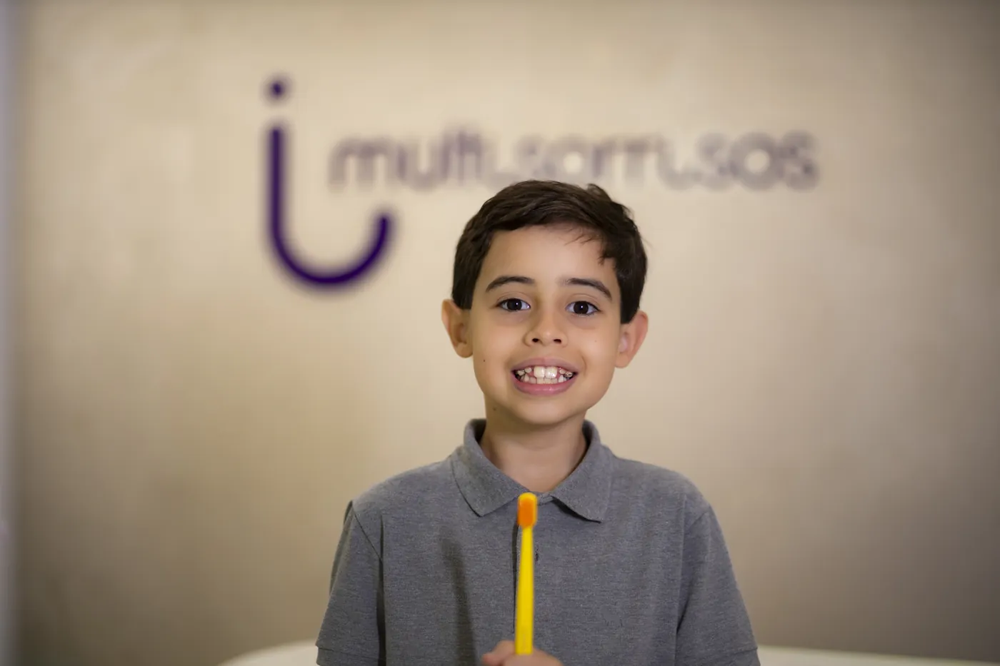
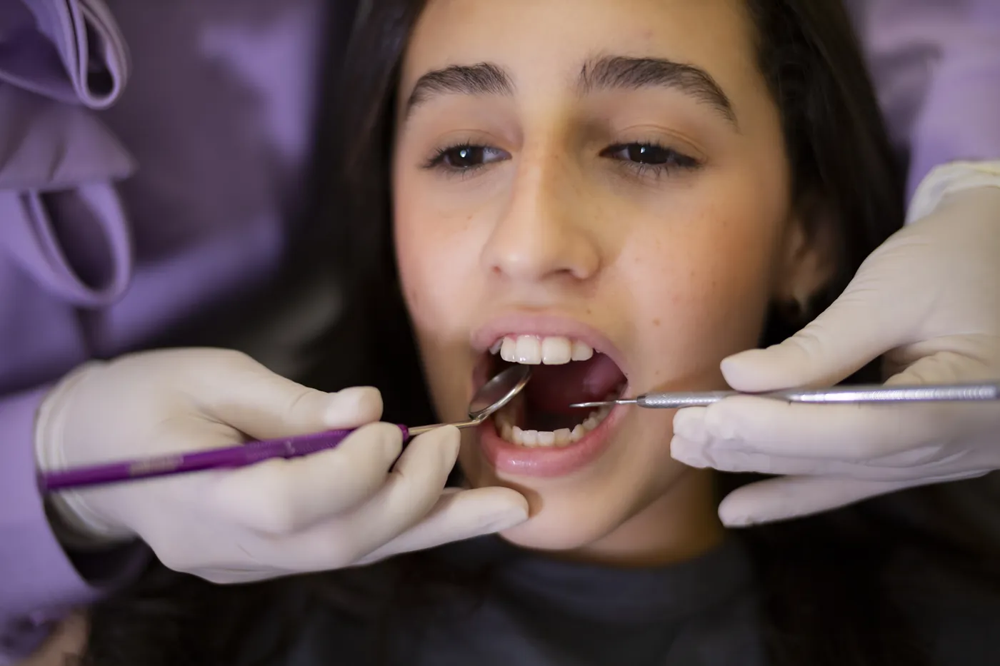
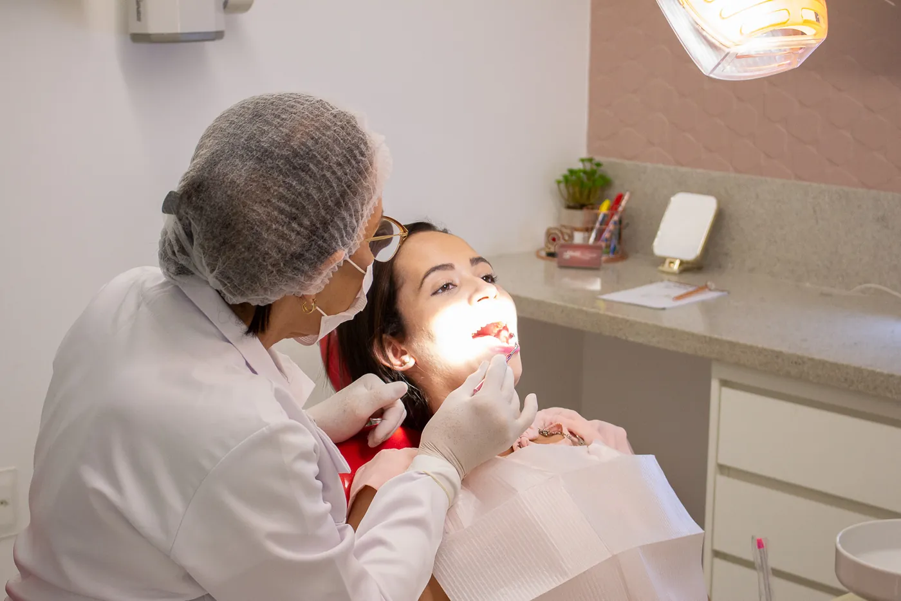
Referência em odontologia em Caruaru, escolhida por famílias inteiras geração após geração.
Tempo para ouvir, explicar e acolher — inclusive quem tem medo de dentista.
Das crianças aos avós: cuidado completo e integrado em um só lugar.
Técnicas e equipamentos atuais para diagnósticos precisos e tratamentos mais confortáveis.
Cuidar antes de tratar: acompanhamento contínuo para manter a saúde do seu sorriso.
Térreo do Empresarial Carolinas, no bairro Maurício de Nassau, com fácil acesso.
Um sonho no coração de uma jovem dentista se tornou referência em odontologia na região. Hoje, a mesma paixão segue viva em uma nova geração.
“Sempre acreditei que cada paciente carrega uma história. Meu papel é cuidar do sorriso, mas também acolher essa história com carinho.” Dra. Noêmia, fundadoraQuero fazer parte dessa história
Dra. Noêmia funda a MultiSorrisos, de forma modesta e com grandes propósitos.
A dedicação conquista famílias e a clínica cresce em Caruaru.
Dra. Willyanne se une à missão, trazendo inovação e olhar moderno.
Equipe multidisciplinar e o mesmo cuidado de sempre, agora para os netos.
Chame no WhatsApp e escolha o melhor dia e horário para você.
Ouvimos suas queixas, examinamos com calma e tiramos todas as dúvidas.
Você recebe um plano claro, com etapas e condições de pagamento.
Tratamento com acompanhamento próximo até o resultado final.
Clique em qualquer botão “Agendar” desta página para falar com nossa equipe pelo WhatsApp, ou ligue para (81) 99685-5675. Encontramos o melhor horário para você.
O valor depende de cada caso. Na avaliação, você recebe um plano de tratamento detalhado com as etapas e as condições de pagamento disponíveis.
Claro. Nosso atendimento é humanizado: explicamos cada etapa, respeitamos o seu tempo e buscamos tornar a experiência o mais confortável possível.
Sim. Atendemos bebês, crianças e adolescentes com uma abordagem acolhedora, para que a experiência seja tranquila desde a primeira consulta.
Atendemos de segunda a sexta-feira, das 08h às 18h.
No térreo do Empresarial Carolinas — R. Silvino Macedo, 294, Maurício de Nassau, Caruaru - PE, 55012-380.
Preencha seus dados e fale direto com nossa equipe pelo WhatsApp. Leva menos de 1 minuto.